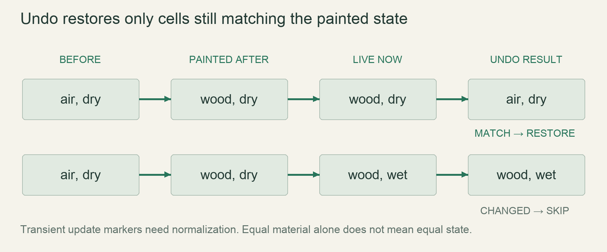

M5 / The vertical sliceLesson 86 of 100 · ~6 min reading + build time
Implement bounded local-revert undo
Undo an unchanged paint stroke without erasing the material transformations that happened after it.
Previously: Build a small readable material and time bar. Keep that working result available before starting this lesson.
Why we need this now
The world keeps moving while you paint. A universal restore would resurrect burned wood or put moving water back in two places. Undo needs a conditional local contract and a memory budget, not a rewind button.
Your result: Undo an unchanged paint stroke without erasing the material transformations that happened after it.

01Find the moment undo stops being simple
Pause the game and paint one stone cell over air. Restoring air is straightforward: there have been no intervening changes. Now paint wood and let it burn. The cell no longer holds the painted wood; restoring its old air would erase the ash and pretend the fire never happened. The player requested reversal of a paint action, not arbitrary reversal of every later simulation effect. That distinction motivates a conditional restore.
Record a before state and a painted-after state for each changed coordinate. At undo time compare the live cell against the recorded after state. Restore the before state only when that comparison succeeds. Report restored and skipped counts during development so the behavior is observable.
02Define matching before writing the equality test
Full-state equality is conservative: material, temperature, moisture, progress, variant and relevant flags must match. Comparing only material permits undoing a newly wet piece of wood as though nothing happened. Conversely, including a transient moved marker can reject a logically unchanged cell. Decide which fields represent meaningful persistent state and normalize transient scheduling markers before comparison. The small experiment below uses a material and moisture field so you can see this distinction without a full World.
Equality is a design contract, not proof of cell identity. Water may flow away and a different identical water cell may arrive. If the desired rule requires identity rather than state equality, an additional generation/revision mechanism must be designed. Do not silently promise stronger identity guarantees than this local-revert model provides.
03One stroke, one record per coordinate
A held brush can revisit a coordinate thousands of times. A stroke should retain the state before its first modification and the final painted result, not thousands of identical intermediate edits. Use a coordinate-to-record index while collecting the action: first visit stores before; later visits update after. At mouse release freeze that action and append it to the undo deque.
Enforce both limits from the spec: at most 20 actions and 200,000 recorded cells. When appending, discard oldest complete actions until both limits hold. Define whether an oversized single action is rejected from history or trimmed; do not silently exceed the budget. This temporary collector also needs a bound during a very long drag, before mouse release.
04Integrate through the normal edit path
Restoring a cell must invalidate the same dirty rectangles, support checks, surface-height entries and render state as painting. Directly replacing a Vec element inside undo while bypassing those hooks produces a world whose storage and derived data disagree. Route successful restores through one shared world-edit operation, then batch derived updates as appropriate.
The example is a pure decision kernel. Save it as an example, run it and inspect the one skipped cell. In your game, look up the recorded coordinate safely, compare normalized state, and call the edit operation for eligible restores. A missing or unloaded coordinate needs a bounded load/skip policy; it is not permission to block the frame indefinitely.
Read → predict → run → change
Walk through the working example
Complete focused experiment: save as examples/lesson_086.rs; run cargo run --example lesson_086 from game/.
Download this worked example ↧
#[derive(Clone, Copy, Debug, PartialEq, Eq)]
struct Cell { material: u8, moisture: u8 }
#[derive(Clone, Copy)]
struct Edit { index: usize, before: Cell, after: Cell }
fn undo(world: &mut [Cell], edits: &[Edit]) -> (usize, usize) {
let mut restored = 0;
let mut skipped = 0;
for edit in edits.iter().rev() {
match world.get_mut(edit.index) {
Some(live) if *live == edit.after => {
*live = edit.before;
restored += 1;
}
_ => skipped += 1,
}
}
(restored, skipped)
}
fn main() {
let air = Cell { material: 0, moisture: 0 };
let wood = Cell { material: 1, moisture: 0 };
let wet_wood = Cell { material: 1, moisture: 50 };
let mut world = [wood, wet_wood];
let edits = [Edit { index: 0, before: air, after: wood },
Edit { index: 1, before: air, after: wood }];
assert_eq!(undo(&mut world, &edits), (1, 1));
assert_eq!(world, [air, wet_wood]);
println!("restored 1; skipped 1 changed cell");
}Read what each part does
- get_mut makes missing coordinates a handled case rather than a panic.
- Reverse action order matters when later actions overlap earlier ones; the stroke collector should still deduplicate individual coordinates.
- This example intentionally does not own chunk loading or dirty-state notifications; integrate those through the existing World edit interface.
Expected result
restored 1; skipped 1 changed cellExact version numbers, paths and compiler wording may differ. Compare the behavior and file locations, not incidental output formatting.
Prediction · repair · transfer
Exercises you actually do
Write a prediction or make an attempt before opening a solution. Use the hint if stuck; then compare reasoning and verify with the stated check. A different implementation is fine when it satisfies the same contract.
Paused exact undo
Paint three distinct cells while paused and undo once. What should be restored?
Need a hint?
No simulation changes intervene.
Worked solution
All three recorded after states still match, so three originals are restored and none skipped. Use three air-to-stone edits and assert the returned pair is (3,0).
How to verify your result
The full fixture equals its pre-stroke state.
Catch a material-only bug
Change a painted cell’s moisture but keep its material. Compare full equality with material-only matching.
Need a hint?
The recorded painted state was dry.
Worked solution
Full equality skips the changed cell. A material-only guard restores it, erasing wetness. Keep the strict state result unless the approved undo policy explicitly treats that change as irrelevant.
How to verify your result
An assertion demonstrates the difference, rather than relying on a screenshot.
Bound a very long stroke
A stroke visits 250,000 unique cells. Can waiting until release enforce a 200,000-cell peak memory limit?
Need a hint?
The collector is already allocated while dragging.
Worked solution
No. Define a live collector bound. A simple initial policy marks the action non-undoable once it exceeds capacity and releases collected history; an alternative splits strokes into bounded actions. Record the chosen user-facing semantics.
How to verify your result
Measure collector memory during the drag and verify the cap.
When it goes wrong
Start with the observed symptom. Change one assumption at a time instead of pasting fixes until the error disappears.
Undo revives a burned wall
What is happening: The code restored before states unconditionally.
Try this: Compare current normalized state against the action’s after state before editing.
Restored roofs do not regain support
What is happening: Undo bypassed derived-data invalidation.
Try this: Use the same world-edit gateway as normal painting.
One stroke consumes enormous memory
What is happening: Repeated coordinates or an unbounded live collector were recorded.
Try this: Deduplicate per coordinate and enforce capacity before mouse release.
Explain it without the example
Why can't undo restore every original cell unconditionally in a running world?
Reasoning to compare
It would overwrite later simulation changes and act like partial time travel. Local revert must respect the world that evolved after the action.
Self-check only: test a prediction or ask your tutor if anything still feels arbitrary.
For your YouTube series
Turn the lesson into an episode
Open with the problem or result
Paint, burn and undo: which part should come back?
Teach in this order
- Demonstrate paused undo
- Break it with a fire
- Derive before/after matching
- Test wet wood
- Bound stroke and history memory
Record this demonstration
Show two neighboring cells: only the unchanged one reverts.
Close with what the viewer can now explain
Undo reverses eligible edits; it does not rewind the simulation.
A lesson can span several recordings. The episode beats are a teaching outline, not a claim that every viewer learns at the same speed.
Finish with evidence
Paused edits revert exactly. Changed-by-simulation cells are skipped according to a documented comparison rule, including what matching state means.
Make one small variation without copying: predict it, run it and explain any difference. On another day, repeat one exercise from memory before starting the next lesson. Ask your tutor about any step you can execute but cannot explain.
This is an attempt marker, not a grade. Learning records are written only after demonstrated understanding.
Primary sources for this lesson
Use sources to verify the mechanism. The lesson itself supplies the instructions; the links are not a substitute for teaching them.